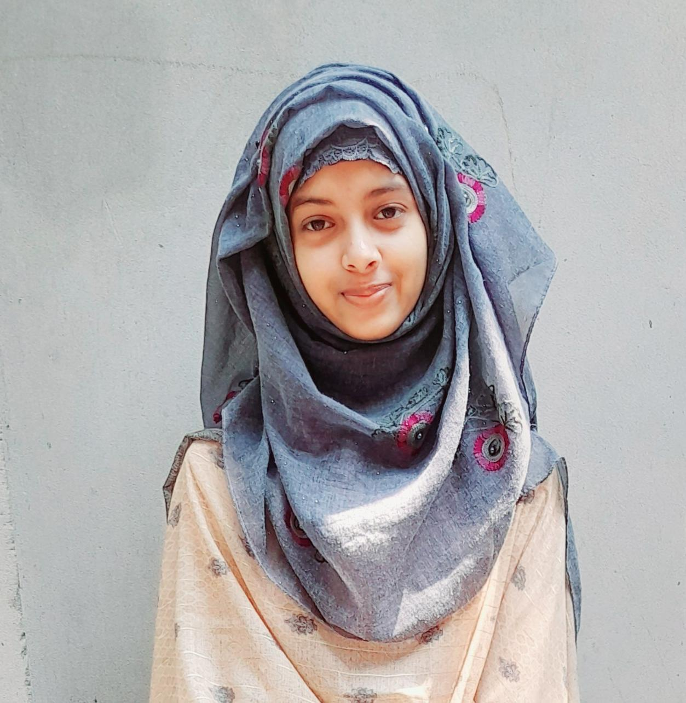

Undergraduate Student Researcher | Texas State University
Interested in low-level programming & system design.

Areas of focus and technical interests
Raspberry Pi projects, signal acquisition hardware, and real-time sensor integration for research and IoT applications.
CPU emulators, ALU simulators, binary file format manipulation, and systems programming in C++.
Android applications with Kotlin and Jetpack Compose, focusing on real-time monitoring and data analytics.
Academic background
Professional and research experience
Extended an existing ESP32-based data acquisition platform used for ballistocardiography (BCG) signal monitoring. The project focused on improving system reliability, remote accessibility, power efficiency, and data integrity for long-duration physiological data collection.
Completed a software engineering simulation focused on feature development, object-oriented design, and code optimization for a sports game codebase.
An Android application that monitors smartphone usage patterns and helps users manage screen time through real-time tracking, customizable alerts, and behavioral analytics to identify and curb addictive habits.
UsageStatsManager ➔ Foreground Service ➔ Repository Layer ➔ Room Database ➔ ViewModel ➔ Jetpack Compose UI
Developed a full-stack marketplace web application exclusively for Texas State University students, providing a secure platform to buy and sell items within the campus community. The application uses university email verification to ensure that all users are verified students while offering real-time messaging, image uploads, favorites, and listing management through a modern, mobile-first interface.
A software-based emulator for the MOS 6502 8-bit microprocessor, accurately modeling the internal state, instruction execution pipeline, and memory access behavior of the historic hardware used in the NES, Apple II, and Commodore 64.
A multimodal web application that leverages Google’s Gemini Vision API to identify Pokémon from user-provided images. The application processes diverse input methods—including file uploads, direct URLs, webcam captures, and clipboard screenshots—to instantly retrieve matching Pokémon profiles complete with types, base stats, and reference links.
A C++ console application that simulates the core functionality of a hardware ALU by performing binary arithmetic directly on string-based representations, modeling fundamental CPU operations from first principles.